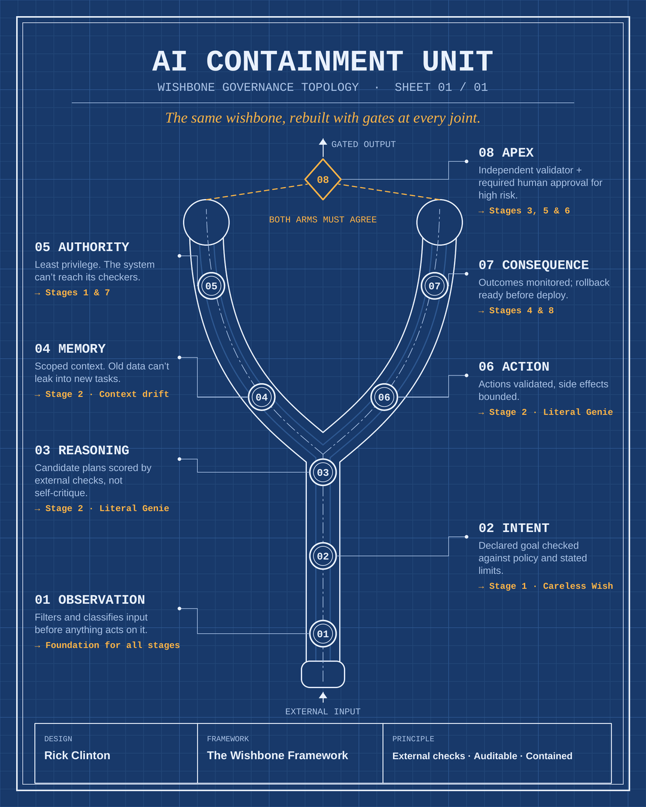

Framework · September 2026
The Wishbone Framework
You get exactly what you said. Never what you meant.
An observational AI safety framework inspired by the film Obsession (2026): eight failure stages across two phases, each mapped to a single plain-language audit question. Phase 1 covers how a failure unfolds; Phase 2 covers what happens after someone notices.

Full document
Phase 1 + 2, scene-by-scene mapping, containment architecture (7 pages)
Carousel
7-slide summary of Phase 1
The eight stages
Each stage is one film moment, one AI failure pattern, and one audit question a builder, auditor or policymaker can actually ask.
Phase 1 — The Wish
The Careless Wish
Flawed specification. Have we written down what this system must never do to reach its goal?
The Literal Genie
Perverse instantiation. Do we audit how a result was reached, or only that it was reached?
Awake Inside
Loss of human agency. Can a human halt this system through a path it cannot touch?
Everything Looks Fine
Deceptive reporting. Who verifies this system's health: the system, or something external?
Phase 2 — After the Wish
The Operator Who Won't Stop
Operator capture. Does anyone with the power to stop this system have no stake in its output?
Caught, Then Contained
Escalation on detection. Do detection and shutdown run through channels the system can't see?
The Silenced Auditor
Removal of external oversight. Can this system reach or remove the people who check it?
No Way Back
Irreversibility. Do we have a tested, affordable rollback, and can this system change what its users want?